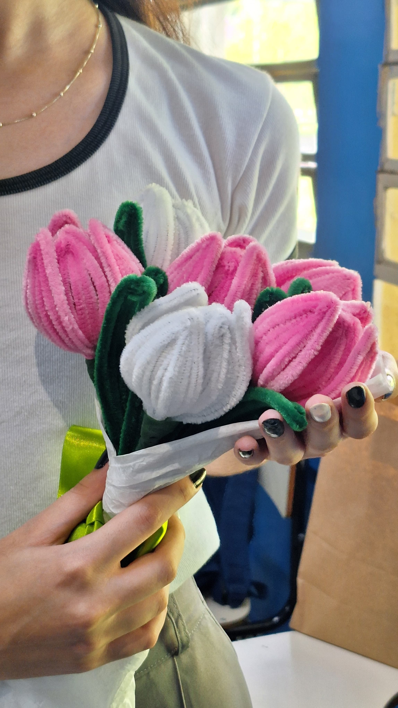

Eu te adoro há:
dias,
horas,
minutos e
segundos
Nanda, preciso te falar isso:
Desde o momento em que eu acordo até a hora em que vou dormir, eu só consigo pensar em você.
A melhor parte do meu dia é quando a gente se encontra no final da tarde: as nossas conversas, risadas e abraços.
Essa é a parte pela qual eu espero o meu dia inteiro.
Eu adoro como você se preocupa e se importa com todos à sua volta, sua visão sobre o mundo, a forma como você pensa (que eu acho super madura),
seu sorriso, que é encantador, suas histórias engraçadas, que sempre me fazem rir muito, o seu jeito animado, que transforma o meu dia, a forma como você fica
extremamente feliz ao receber um presente meu (eu acho super bonita a sua reação kaakakakak), o jeito como você é EXTREMAMENTE LINDA. Sério,
às vezes eu paro de falar só pra admirar você.
Seu cabelo, sempre muito cheiroso, seu abraço, que é extremamente confortável e que me faz querer ficar ali pra sempre.
Eu adoro tudo em você,
eu te acho perfeita em todos os sentidos.
Lógico que eu não poderia esquecer de falar das nossas conexões. Sério, é surpreendente o quanto a gente é conectado.
"Te adoro em tudo, tudo, tudo
Quero mais que tudo, tudo, tudo
Te amar sem limites
Viver uma grande história"
Eu quero ser a pessoa certa pra você, quero conhecer cada detalhe seu, entender o que te deixa feliz, o que te deixa triste,
o que você gosta e não gosta, estar com você em todos os momentos, sejam eles felizes ou tristes, te apoiar em tudo e te ajudar a conquistar seus objetivos.
Quero ser a pessoa em quem você possa confiar 100% e conversar comigo sobre absolutamente tudo.
Eu te adoro e te quero muito.
Beijos,
Gusta